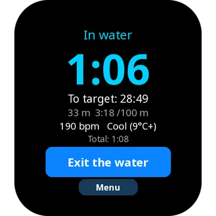

Cold Dip
Isbading, kaldt bad og badstue — tatt tiden på Amazfit-klokken, med puls, GPS og historikk.
Appen er sendt inn og venter på vurdering. Når den er godkjent, åpner denne knappen siden i Zepp App Store.
7 dager gratis med alle funksjoner, deretter en engangsutløsing til 4,99 USD via KiezelPay. Ingen abonnement.
Slik fungerer det
Et kort blikk på én økt, fra startskjermen til hvordan du følte deg etterpå.
Se økten
- Åpne Cold Dip på land. Sett vanntemperaturen med − / + og trykk START.
- På land: tidtakeren går mens du gjør deg klar. Trykk når du går i vannet.
- I vannet: tid i vannet, puls, vanntemperatur og GPS ved svømming i åpent vann. Trykk når du går opp.
- Etter at du har gått opp: tid siden du forlot vannet og en nedtelling for oppvarming (afterdrop).
- Badstue, hvis du bruker det: appen tar tiden på runden, deretter tilbake i vannet eller ferdig.
- Hvordan du følte deg, 1–5, og lagre. Historikk og rekorder blir på klokken.
Skjermbilder
Samme økt på en rund og en rektangulær Amazfit-klokke.
Runde klokker

Start 
På land 
I vannet 
Etter at du har gått opp 
Badstue 
Følelse
Rektangulære klokker

Start 
På land 
I vannet 
Etter at du har gått opp 
Badstue 
Følelse
Pris
Hele appen er betalt — det kommer ikke en egen «Pro»-opplåsing senere.
- 7 dager gratis med alle funksjoner, fra første gang du åpner appen.
- Deretter en engangsutløsing til 4,99 USD via KiezelPay (kzl.io). Klokken viser en kode; du betaler i nettleseren.
- Ingen abonnement. Appen ser aldri kortdetaljene dine. Betalingen håndteres av KiezelPay.
Støttede Amazfit-klokker
Cold Dip kjører på Zepp OS 3 (API 3.0) og nyere. Den nøyaktige modellisten vises i butikken når Zepp har godkjent pakken.
- Balance Balance, Balance 2, Balance 2 XT, Balance 3, Balance Ultra
- Active Active, Active 2 (round and square), Active 3 Premium, Active Edge, Active Max
- T-Rex T-Rex 3, T-Rex 3 Pro, T-Rex Ultra, T-Rex Ultra 2
- Cheetah Cheetah (round and square), Cheetah Pro, Cheetah 2 Pro, Cheetah 2 Ultra
- GTR / GTS / Falcon GTR 4, GTS 4, Falcon
- Bip Bip 5 Unity, Bip 6, Bip Max
Bip 5 Unity har ikke GPS. Profiler med rute viser «søker GPS…»; resten av appen virker.
Ikke støttet (eldre Zepp OS): GTR 3, GTS 3, GTS 4 Mini, GTR Mini, Bip 5 (modellen uten Unity), T-Rex 2 og Band 7.
Personvern og vær
Ingen konto, ingen analyse, ingen reklame. Puls, GPS og økt-historikken blir på klokken.
Når telefonen er koblet til, kommer været (lufttemperatur, vind, forhold) fra MET Norway Locationforecast 2.0, under CC BY 4.0. Bare en omtrentlig posisjon sendes til api.met.no. Kilde: © MET Norway (CC BY 4.0).